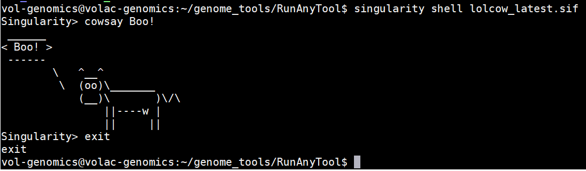

Working inside a container
Rather than submitting commands from outside the container, alternatively you can work inside a container. This allows you to submit multiple commands one after another without the building and collapsing the container multiple times.
To make and enter a container, use:
singularity shell CONTAINER_NAME.sif
Substitute CONTAINER_NAME for the name of the container you wish to use.
Tip
- Singularity links your entire HOME directory to the Singularity container. You can use
lsto view the file system. - While working inside a container you can make new subdirectories (
mkdir) to organise your outputs. These will persist after exiting the container. - To exit the container shell use the
exitcommand. This will collapse the container.
Examples
To run build and enter a container named lolcow use:
singularity shell lolcow_latest.sif
You can now enter commands, for example:
cowsay -h
cowsay moo moo
cowthink -Tww Boo!
This is how the terminal will appear:

-
singularity shell lolcow_latest.sifto make and enter the container, - Once inside the container the command prompt changes to
Singularity>, - the command
cowsay Boo!prints a cow saying 'Boo!', -
exitis used to exit and collapse the container, and - the regular command prompt reappears
.../RunAnyTool$.